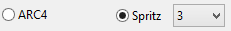
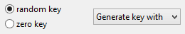
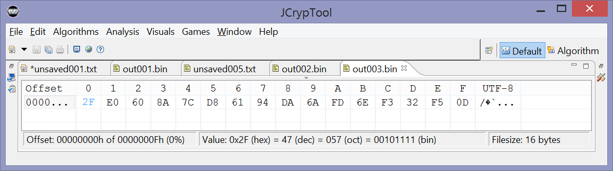

This help page explains how to use the dialog for the ARC4 cipher from the JCT menu Algorithm → Symmetric. More detailed information about the algorithms ARC4 and Spritz can be found in the help for the ARC4 visualization plug-in.
The following three paragraphs describe the options in this dialog.
ARC4 is a stream cipher that means that the encryption and the decryption process do the same. It's always an XOR between plaintext or encrypted text on the one hand and the random number sequence on the other hand.
| There are many different implementations of ARC4, we have implemented two: Spritz and ARC4. At the implementation of Spritz you can choose a variable called w. For more information see the help for the ARC4 visualization plug-in. |  |
| You have the possibility to choose between hex and binary representation. If you start writing your key in hex and then select Binary the already displayed characters will be transformed to binary (it also works the other way round). |
| For giving the algorithm a short try, you can use the random or the 0-bit key generator. Attention: If you chose the random generator and plan to decrypt your message again, please copy your key beforehand. |  |
| The "Finish" button only becomes active when you have entered a complete byte (which is an even number of hex characters). Nibbles aren't accepted. Remark: Here, the keylength restrictions of the algorithm are active: length between 5 and 256 byte. Using the dropdown button "Generate key with" you can set the three default key lengths 128, 192, and 256 byte. |
|
The content of the active editor serves as input for this dialog. In this example, plaintext was used as input, so that "Encrypt" is specified as operation in the dialog. Furthermore, the key must be entered in the dialog and the ARC4 variant that is to be used must be specified. Spritz is the improved version of ARC4. The output is then written to a new editor tab.
Plaintext: AA BB CC DD EE FF 00 11 22 33 44 55 66 77 88 99

Key: 00 11 22 33 44 55 66 77 88 99 AA BB CC DD EE FF
The actual ARC4 algorithm describes how the keystream is generated from the key.
Output: Calculated ciphertext: 2F E0 60 8A 7C D8 61 94 DA 6A FD 6E F3 32 F5 0D
Comment: The operations Encrypt and Decrypt both give the same result, because the input is always XORed with the generated keystream.
The example here uses the same data as the example at the end of the online help for the ARC4 visualization plug-in.